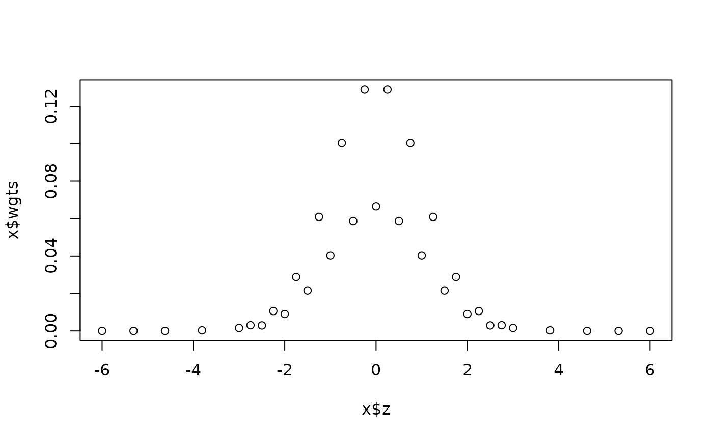
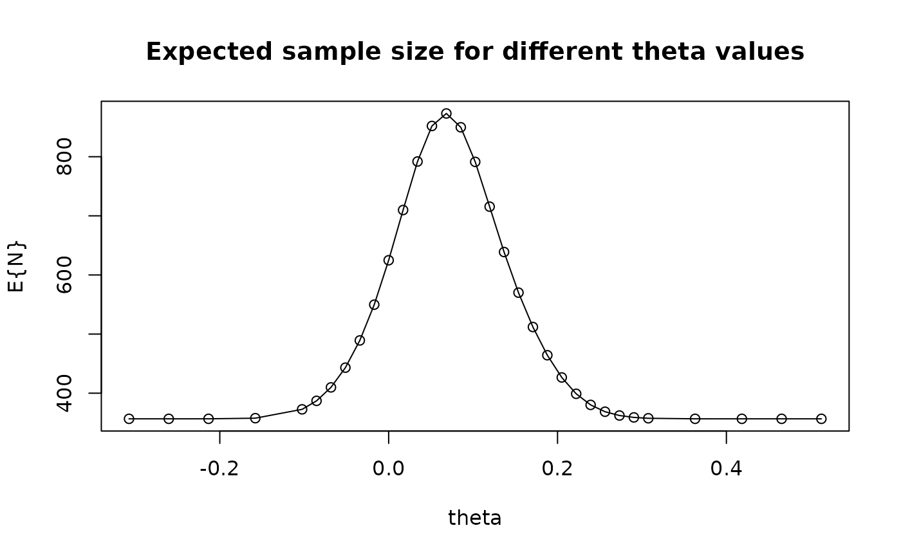

normalGrid() is intended to be used for computation of the expected value of a function of a normal random variable. The function produces grid points and weights to be used for numerical integration.
This is a utility function to provide a normal density function and a grid
to integrate over as described by Jennison and Turnbull (2000), Chapter 19.
While integration can be performed over the real line or over any portion of
it, the numerical integration does not extend beyond 6 standard deviations
from the mean. The grid used for integration uses equally spaced points over
the middle of the distribution function, and spreads points further apart in
the tails. The values returned in gridwgts may be used to integrate
any function over the given grid, although the user should take care that
the function integrated is not large in the tails of the grid where points
are spread further apart.
Usage
normalGrid(r = 18, bounds = c(0, 0), mu = 0, sigma = 1)Arguments
- r
Control for grid points as in Jennison and Turnbull (2000), Chapter 19; default is 18. Range: 1 to 80. This might be changed by the user (e.g.,
r=6which produces 65 gridpoints compare to 185 points whenr=18) when speed is more important than precision.- bounds
Range of integration. Real-valued vector of length 2. Default value of 0, 0 produces a range of + or - 6 standard deviations (6*sigma) from the mean (=mu).
- mu
Mean of the desired normal distribution.
- sigma
Standard deviation of the desired normal distribution.
Value
- z
Grid points for numerical integration.
- density
The standard normal density function evaluated at the values in
z; see examples.- gridwgts
Simpson's rule weights for numerical integration on the grid in
z; see examples.- wgts
Weights to be used with the grid in
zfor integrating the normal density function; see examples. This is equal todensity * gridwgts.
Note
The gsDesign technical manual is available at https://keaven.github.io/gsd-tech-manual/.
References
Jennison C and Turnbull BW (2000), Group Sequential Methods with Applications to Clinical Trials. Boca Raton: Chapman and Hall.
Author
Keaven Anderson keaven_anderson@merck.com
Examples
library(ggplot2)
# standard normal distribution
x <- normalGrid(r = 3)
plot(x$z, x$wgts)

# verify that numerical integration replicates sigma
# get grid points and weights
x <- normalGrid(mu = 2, sigma = 3)
# compute squared deviation from mean for grid points
dev <- (x$z - 2)^2
# multiply squared deviations by integration weights and sum
sigma2 <- sum(dev * x$wgts)
# square root of sigma2 should be sigma (3)
sqrt(sigma2)
#> [1] 3.000001
# do it again with larger r to increase accuracy
x <- normalGrid(r = 22, mu = 2, sigma = 3)
sqrt(sum((x$z - 2)^2 * x$wgts))
#> [1] 3
# this can also be done by combining gridwgts and density
sqrt(sum((x$z - 2)^2 * x$gridwgts * x$density))
#> [1] 3
# integrate normal density and compare to built-in function
# to compute probability of being within 1 standard deviation
# of the mean
pnorm(1) - pnorm(-1)
#> [1] 0.6826895
x <- normalGrid(bounds = c(-1, 1))
sum(x$wgts)
#> [1] 0.6826895
sum(x$gridwgts * x$density)
#> [1] 0.6826895
# find expected sample size for default design with
# n.fix=1000
x <- gsDesign(n.fix = 1000)
x
#> Asymmetric two-sided group sequential design with
#> 90 % power and 2.5 % Type I Error.
#> Upper bound spending computations assume
#> trial continues if lower bound is crossed.
#>
#> ----Lower bounds---- ----Upper bounds-----
#> Analysis N Z Nominal p Spend+ Z Nominal p Spend++
#> 1 357 -0.24 0.4057 0.0148 3.01 0.0013 0.0013
#> 2 714 0.94 0.8267 0.0289 2.55 0.0054 0.0049
#> 3 1070 2.00 0.9772 0.0563 2.00 0.0228 0.0188
#> Total 0.1000 0.0250
#> + lower bound beta spending (under H1):
#> Hwang-Shih-DeCani spending function with gamma = -2.
#> ++ alpha spending:
#> Hwang-Shih-DeCani spending function with gamma = -4.
#>
#> Boundary crossing probabilities and expected sample size
#> assume any cross stops the trial
#>
#> Upper boundary (power or Type I Error)
#> Analysis
#> Theta 1 2 3 Total E{N}
#> 0.0000 0.0013 0.0049 0.0171 0.0233 624.9
#> 0.1025 0.1412 0.4403 0.3185 0.9000 791.3
#>
#> Lower boundary (futility or Type II Error)
#> Analysis
#> Theta 1 2 3 Total
#> 0.0000 0.4057 0.4290 0.1420 0.9767
#> 0.1025 0.0148 0.0289 0.0563 0.1000
# set a prior distribution for theta
y <- normalGrid(r = 3, mu = x$theta[2], sigma = x$theta[2] / 1.5)
z <- gsProbability(
k = 3, theta = y$z, n.I = x$n.I, a = x$lower$bound,
b = x$upper$bound
)
z <- gsProbability(d = x, theta = y$z)
cat(
"Expected sample size averaged over normal\n prior distribution for theta with \n mu=",
x$theta[2], "sigma=", x$theta[2] / 1.5, ":",
round(sum(z$en * y$wgt), 1), "\n"
)
#> Expected sample size averaged over normal
#> prior distribution for theta with
#> mu= 0.1025057 sigma= 0.06833715 : 682.2
plot(y$z, z$en,
xlab = "theta", ylab = "E{N}",
main = "Expected sample size for different theta values"
)
lines(y$z, z$en)
